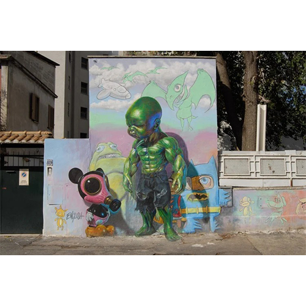
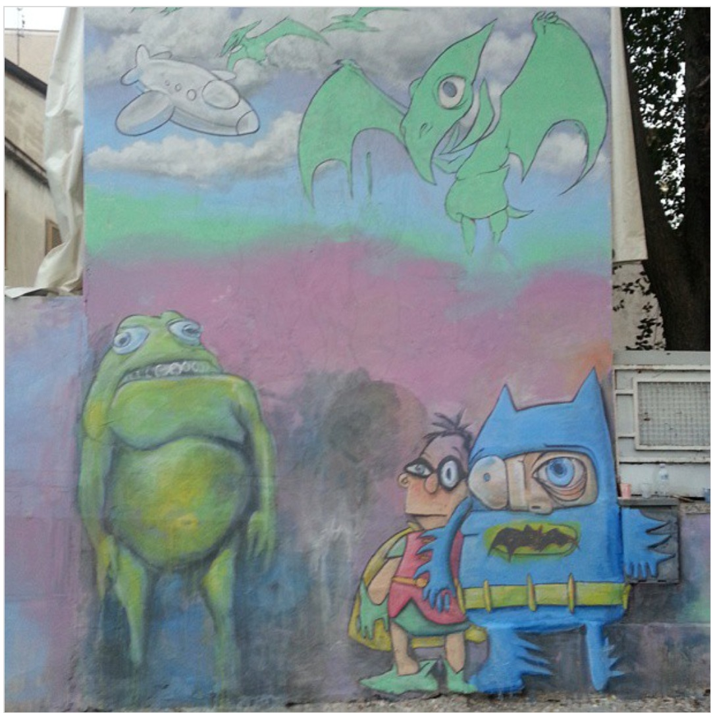
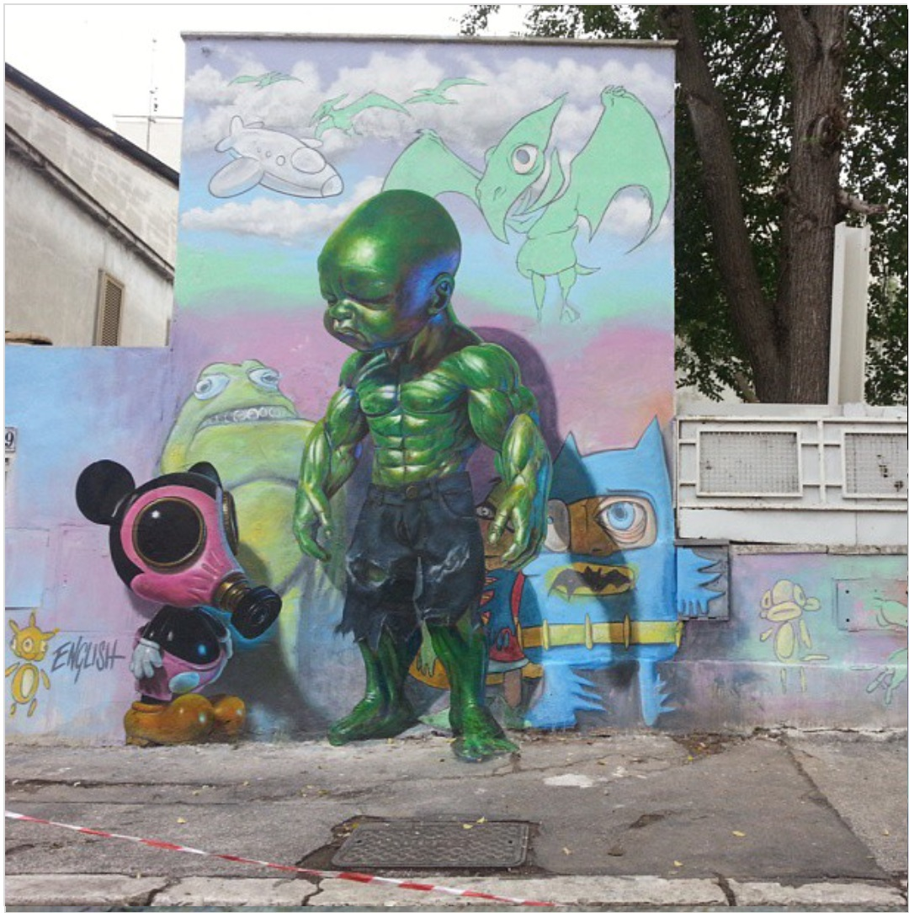

Temper Tot & Mousemask Murphy, Rome, 2013
Large-scale mural created for Rome’s open-air museum M.U.Ro in Quadraro, pairing Ron English’s Temper Tot and Mousemask Murphy characters.

Work details
Description
Painted for Rome’s open-air museum M.U.Ro, this mural pairs two of Ron English’s signature characters: the hyper-muscled Temper Tot and the gas-masked Mousemask Murphy. Italian press interpreted the duo as an allegory of a powerful nation guided by immature leadership, while local guides noted how the flat pastel background pushes both figures forward with near-sculptural force.
The mural later appeared in Sky Arte’s documentary Muro a Roma and remains one of Quadraro’s best-known street-art landmarks.
Gallery

